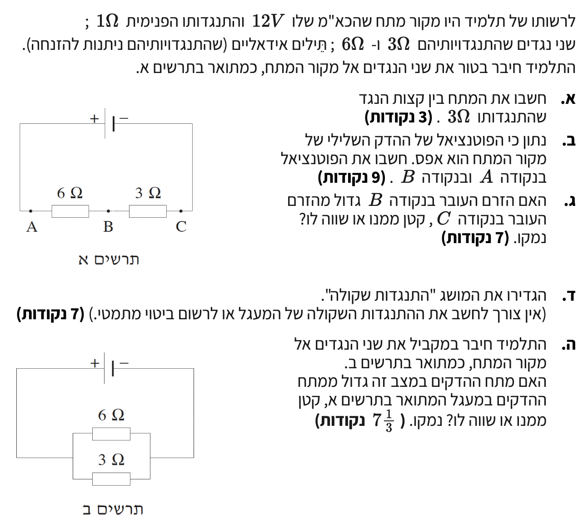

פתרון מודרך, צעד-אחר-צעד המותאם לתלמידי 5 יח"ל

לפנינו מעגל המורכב ממקור מתח ושני נגדים המחוברים בטור (תרשים א'). כל הנתונים נתונים מראש ביחידות MKS תקניות (וולט, אוהם) ולכן אין צורך בהמרה. הנתונים המספריים הם: מקור המתח הוא בעל כא"מ \( \varepsilon = 12\text{V} \) והתנגדות פנימית \( r = 1\Omega \). שני הנגדים המחוברים בטור הם \( R_1 = 6\Omega \) ו- \( R_2 = 3\Omega \).
אנו מתבקשים לחשב את המתח הנופל על קצות הנגד שהתנגדותו \( 3\Omega \), כלומר נמצא את הערך של \( V_{3\Omega} \).
ראשית, נמצא את ההתנגדות השקולה החיצונית של שני הנגדים המחוברים בטור על פי הנוסחה לפיה ההתנגדות השקולה בטור היא סכום ההתנגדויות:
כעת, נרצה לחשב את הזרם הכולל הזורם במעגל. מכיוון שהנוסחה המקורבת לזרם אינה מופיעה ישירות בדף הנוסחאות, נפתח אותה באופן מפורש משתי נוסחאות יסוד המופיעות בדף הנוסחאות:
1. משוואת מתח ההדקים של מקור המתח מעשי:
2. חוק אוהם עבור המעגל החיצוני השקול (מכיוון שמתח ההדקים של המקור הוא גם המתח הנופל על ההתנגדות השקולה החיצונית המחוברת אליו):
נשווה בין שני הביטויים למתח ההדקים כדי לחלץ את הזרם \( I \):
נציב כעת את הערכים המספריים שנתונים לנו במשוואה שפיתחנו:
מכיוון שהנגדים מחוברים בטור, הזרם החוצה את הנגד של \( 3\Omega \) הוא בדיוק הזרם הראשי שחישבנו (\( 1.2\text{A} \)).מצא את המתח עליו באמצעות חוק אוהם:
המתח בין קצות הנגד שהתנגדותו \( 3\Omega \) הוא \( 3.6\text{V} \).
נוסף לנו נתון חדש וחשוב: הפוטנציאל של ההדק השלילי של מקור המתח נקבע להיות אפס, כלומר \( V_{-} = 0\text{V} \). הזרם במעגל חושב בסעיף הקודם והוא עומד על \( I = 1.2\text{A} \). הזרם יוצא מההדק החיובי (קרוב לנקודה A) לכיוון ההדק השלילי (קרוב לנקודה C).
אנו נדרשים לחשב את ערך הפוטנציאל החשמלי בשתי נקודות נפרדות: הפוטנציאל בנקודה A מסומן כ- \( V_A \), והפוטנציאל בנקודה B מסומן כ- \( V_B \).
נשים לב לנקודה C המחוברת ישירות אל ההדק השלילי של המקור באמצעות תיל אידאלי. לכן, הפוטנציאל בה שווה לפוטנציאל ההדק השלילי:
כעת, נמצא את הפוטנציאל בנקודה B. הזרם זורם מנקודה B לנקודה C. המתח על הנגד שביניהן (\( R_2 = 3\Omega \)) הוגדר כהפרש הפוטנציאלים. בסעיף הקודם מצאנו שמתח זה הוא \( 3.6\text{V} \):
כדי למצוא את הפוטנציאל בנקודה A, נסתכל על המתח על הנגד \( R_1 = 6\Omega \). נחשב את המתח עליו, ולאחר מכןמצא את הפוטנציאל ב-A (הזרם זורם מ-A ל-B, ולכן ב-A הפוטנציאל גבוה יותר):
נקודה A מחוברת באמצעות תיל אידאלי להדק החיובי של המקור, ולכן הפוטנציאל בה זהה לפוטנציאל ההדק החיובי. מתח ההדקים הוא למעשה ההפרש בין ההדק החיובי לשלילי:
הפוטנציאל בנקודה B הוא \( V_B = 3.6\text{V} \) והפוטנציאל בנקודה A הוא \( V_A = 10.8\text{V} \).
התלמיד בוחן את שתי הנקודות במעגל הטורי (תרשים א'). הזרם עבר דרך נקודה B לפני הנגד השני, ועבר דרך נקודה C לאחר הנגד השני.
עלינו לקבוע האם הזרם החשמלי העובר בנקודה B גדול מהזרם שעובר בנקודה C, קטן ממנו, או שווה לו, ולנמק את תשובתנו באופן פיזיקלי ברור.
במעגל החשמלי המתואר בתרשים א', כל הרכיבים (המקור והנגדים) מחוברים בטור זה לזה. מסלול הזרימה של האלקטרונים הוא מסלול יחיד ללא נקודות התפצלות (צמתים). לפי חוק שימור המטען, מטענים חשמליים אינם יכולים להיווצר יש מאין ואינם יכולים להיעלם.
הזרם המוגדר ככמות המטען העוברת דרך חתך מוליך בשנייה, חייב להיות זהה בכל נקודה לאורך מסלול טורי זה. הנגד אינו "מבזבז" זרם, אלא מבזבז אנרגיה (ולכן הפוטנציאל נופל, אך כמות המטענים הזורמת נשמרת).
הזרם העובר בנקודה B שווה לזרם העובר בנקודה C.
השאלה דורשת הגדרה מילולית ומושגית למונח "התנגדות שקולה", המקשרת בין מתח חשמלי לזרם חשמלי ללא תלות במבנה מעגל ספציפי.
עלינו לספק הגדרה פיזיקלית מדויקת ועקבית המבוססת על חוק אוהם, המבהירה כיצד נגד יחיד מייצג מערכת נגדים שלמה.
ננסח את ההגדרה הפיזיקלית של התנגדות שקולה בצורה כללית ומדויקת המבוססת ישירות על חוק אוהם:
התנגדות שקולה של מערכת נגדים היא התנגדותו של נגד יחיד (דמיוני או אמיתי), שאם נחבר את קצותיו להפרש פוטנציאלים (מתח חשמלי \( V \)) כלשהו, יזרום דרכו זרם חשמלי \( I \) השווה בעוצמתו לזרם הכולל שהיה זורם במערכת הנגדים כולה לו היינו מפעילים על קצותיה את אותו המתח בדיוק.
הגדרה זו מתקשרת ישירות לחוק אוהם, המגדיר את היחס הקבוע בין המתח המופעל לבין הזרם המתקבל:
התנגדות שקולה של מערכת נגדים היא התנגדותו של נגד יחיד, שאם נפעיל על קצותיו מתח זהה למתח המופעל על קצות מערכת הנגדים, יזרום דרכו זרם השווה לזרם הכולל הזורם במערכת כולה, כלומר: \( R_{eq} = \frac{V}{I} \).
התלמיד בונה מעגל חדש (תרשים ב'). במעגל זה, שני הנגדים שהיו לנו קודם (\( R_1 = 6\Omega \) ו- \( R_2 = 3\Omega \)) מחוברים כעת במקביל אל אותו מקור מתח (בעל כא"מ \( \varepsilon = 12\text{V} \) והתנגדות פנימית \( r = 1\Omega \)).
אנו נדרשים לקבוע האם מתח ההדקים במצב החדש (תרשים ב') גדול, קטן או שווה למתח ההדקים שהיה במעגל הטורי (תרשים א'), ולנמק את תשובתנו.
שלב ראשון - שינוי בהתנגדות השקולה: כאשר אנו מחברים נגדים במקביל, ההתנגדות השקולה של המערכת קטנה, והיא תמיד קטנה יותר מההתנגדות של הנגד הקטן ביותר במערכת. נחשב את ההתנגדות השקולה החדשה \( R_p \) על פי הנוסחה לחיבור נגדים במקביל המופיעה בדף הנוסחאות:
במעגל א' (בטור), ההתנגדות השקולה הייתה \( 9\Omega \). ניתן לראות בבירור כי ההתנגדות השקולה של המעגל החיצוני קטנה משמעותית (\( 2\Omega < 9\Omega \)).
שלב שני - השפעה על הזרם הראשי: נבטא את הזרם הכולל על ידי השוואת מתח ההדקים המופיע בדף הנוסחאות \( V_{ab} = \varepsilon - Ir \) לחוק אוהם על המעגל החיצוני השקול \( V_{ab} = I \cdot R_p \), באופן זהה לפיתוח המלא שביצענו בסעיף א':
מכיוון שהכא"מ (\( \varepsilon \)) וההתנגדות הפנימית (\( r \)) של המקור אינם משתנים, הקטנת ההתנגדות החיצונית השקולה (\( R_p \)) גורמת לכך שהזרם הכולל היוצא מהמקור יגדל.
שלב שלישי - השפעה על מתח ההדקים: מתח ההדקים נתון על ידי הביטוי המופיע בדף הנוסחאות \( V_{ab} = \varepsilon - Ir \). הביטוי \( Ir \) מייצג את מפל המתח הפנימי הנוצר בתוך מקור המתח עצמו. מכיוון שהזרם הראשי \( I \) גדל, המכפלה \( Ir \) בהכרח תגדל.
נחסר כעת גודל גדול יותר מתוך הכא"מ הקבוע \( \varepsilon \). התוצאה היא שמתח ההדקים הכולל של המקור החוצה יקטן.
נחשב את הזרם החדש במעגל ב':
נחשב את מתח ההדקים החדש:
במעגל א' מתח ההדקים היה \( 10.8\text{V} \), ולכן אכן מתח ההדקים במעגל ב' קטן יותר.
מתח ההדקים בתרשים ב' קטן ממנו (קטן ממתח ההדקים בתרשים א').